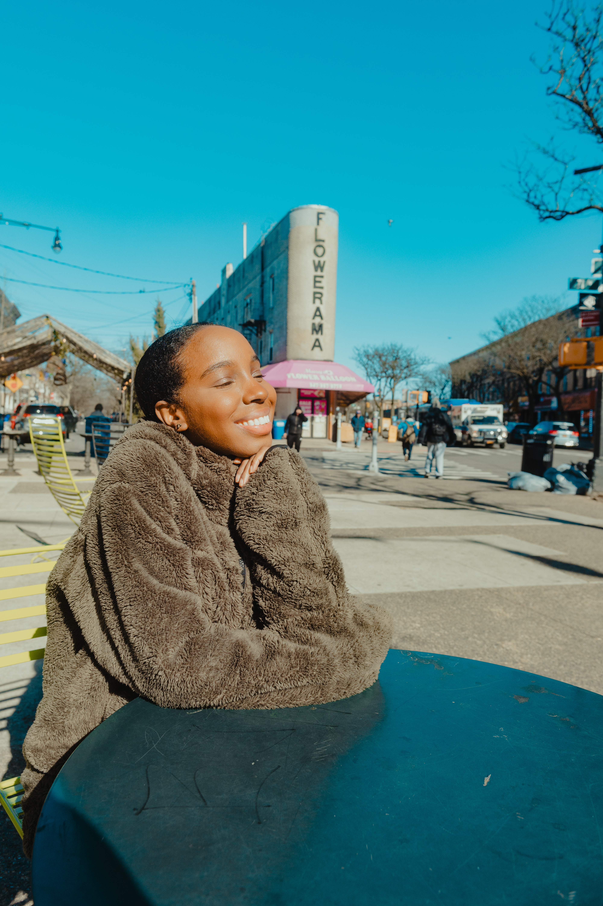

I spend half my time in the world of logic and algorithms and the other half deliberately carving out space for art; I have to force it into my routine, or I risk losing the very thing that makes my work human. My name is Desirée Francheska Honoré and I’m an Emerging Media & Computer Science student living in New York. I've always been curious about how things work, especially when it comes to code and design. I’m especially interested in the space where creativity meets technology and look forward to exploring more of what connects the two. This site is my little corner of the internet where I share what I’m learning, reading, building, and experimenting with. Thanks for stopping by, feel free to explore, and maybe even learn something new alongside me. -Des

A curated collection of projects where technology meets thoughtful design.
Have a project in mind? I'd love to hear about it.
Start a Conversation